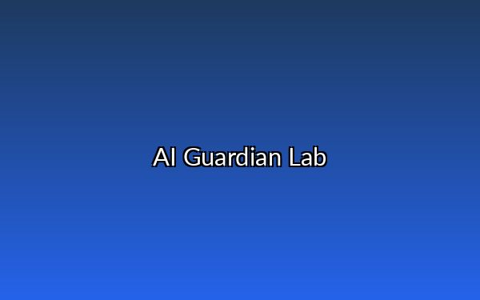
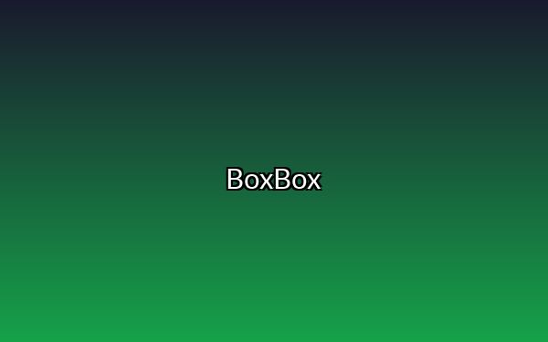
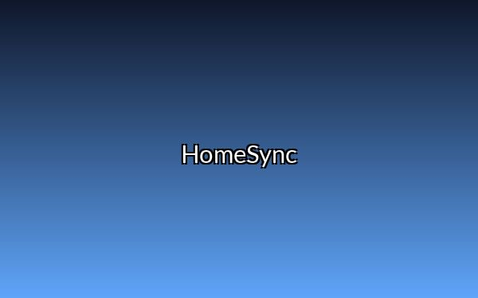
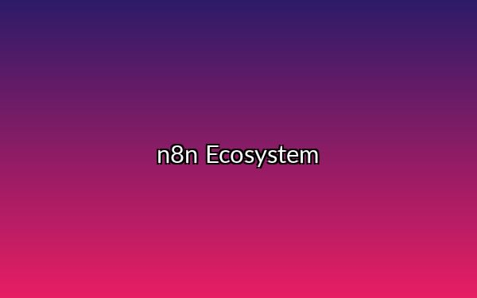
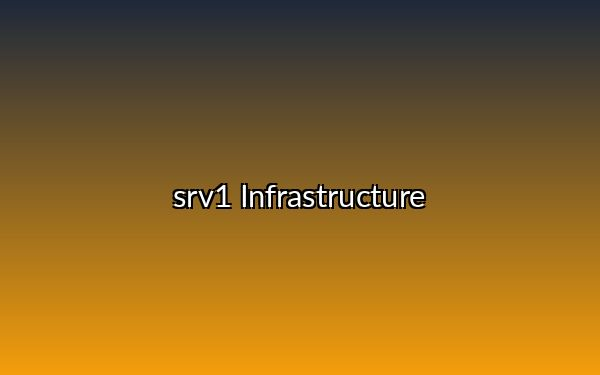

AI Guardian Lab
Blocca tentativi di prompt injection e comandi malevoli in tempo reale. Un layer di validazione a 4 livelli che garantisce che un AI agent esegua solo cio che dovrebbe. Utilizzato in produzione per mitigare rischi LLM.
AI Engineer & Security Specialist
Trasformo prototipi LLM in infrastrutture scalabili, sicure e pronte per la produzione.
Parliamo della tua infrastrutturaProteggo le pipeline AI dalle vulnerabilita tipiche dei modelli linguistici. Progetto architetture dove la sicurezza non e un layer aggiunto, ma il punto di partenza. Automazione, infrastrutture self-hosted, CI/CD, monitoring.
Penso come un attaccante. Ogni sistema che costruisco parte dalla domanda: "cosa succede se qualcuno cerca di bypassarlo?"

Blocca tentativi di prompt injection e comandi malevoli in tempo reale. Un layer di validazione a 4 livelli che garantisce che un AI agent esegua solo cio che dovrebbe. Utilizzato in produzione per mitigare rischi LLM.

Gestione automatizzata di logiche di punteggio complesse e session handling. Un sistema a zero manutenzione che processa dati in tempo reale senza intervento umano, incluso auto-renew di cookie di sessione.

Architettura minimalista (0.3s load time) progettata per la massima affidabilita in contesti multi-utente.

Trenta workflow di automazione su server self-hosted: routing intelligente di link via LLM, auto-healer che diagnostica e ripara workflow falliti, gestione API, integrazione Telegram, monitoraggio. Uso n8n sia da UI che da CLI.

Infrastruttura self-hosted scalabile con security hardening di livello enterprise: 30 container Docker, backup automatici, VPN Tailscale, dashboard monitoring.
Linguaggi
Python, JavaScript, HTML/CSS, Bash
Framework
Flask, FastAPI, n8n, Node.js
DevOps
Docker, Docker Compose, Nginx, GitHub Actions
Sistemi
Linux Ubuntu, Tailscale, UFW
Database
SQLite, PostgreSQL
AI / LLM
OpenAI, Groq, DeepSeek, LiteLLM, Ollama